Destinasi Wisata Populer
Pilihan wisata terbaik di Malang Raya
List Wisata Populer Lainnya
Rekomendasi

 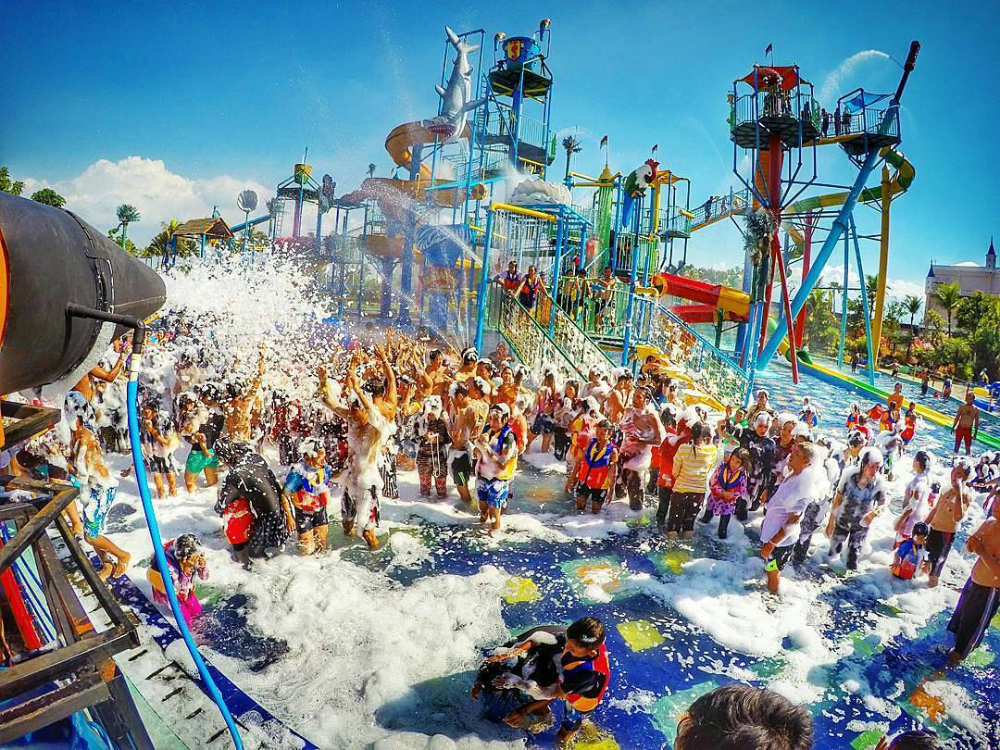
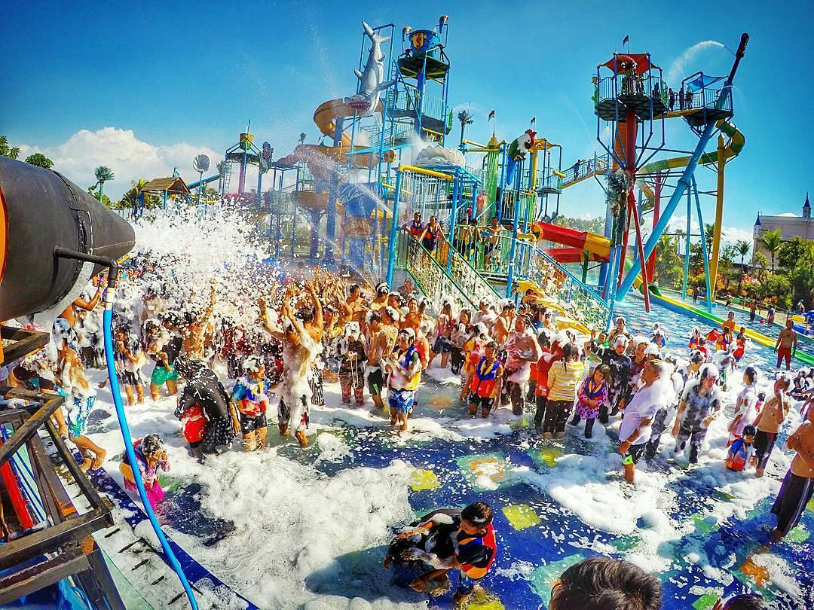
Hawai Waterpark
Kota Malang / Jawa Timur
Taman wisata air dengan ombak Tsunami dan
seluncuran seru
cocok untuk refreshing.
Rekomendasi
 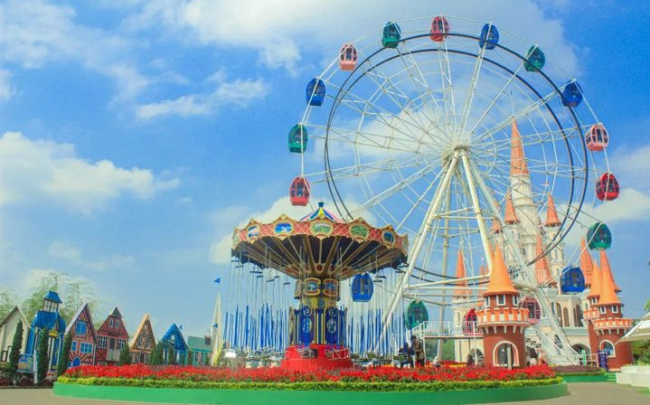
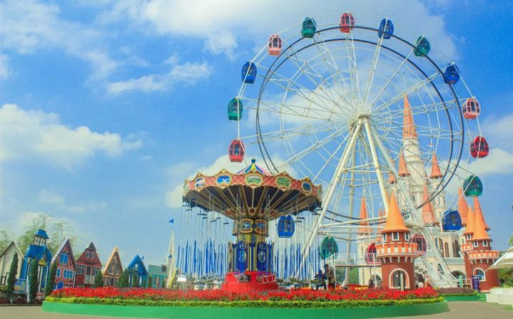

Santerra De Lapontte
Kab.Malang / Jawa Timur
Taman bunga warna-warni dengan spot foto ala luar negeri.
Rekomendasi
 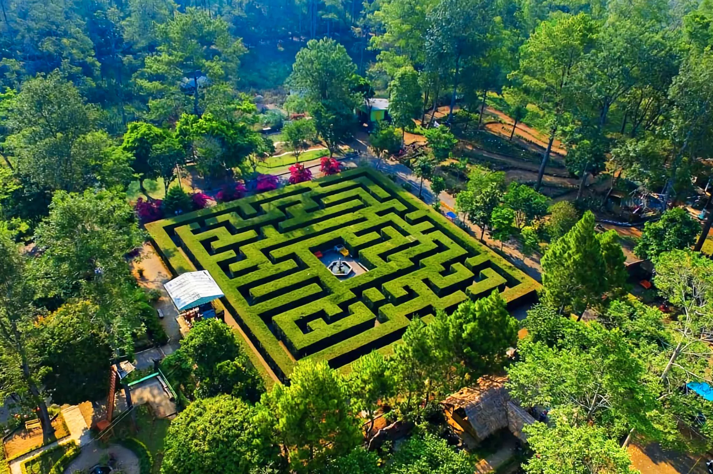
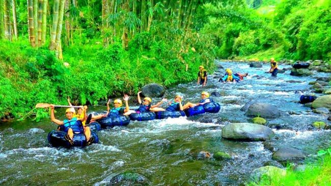
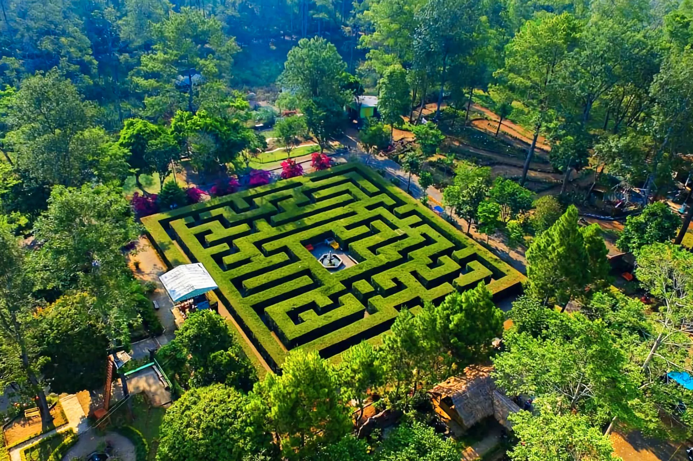
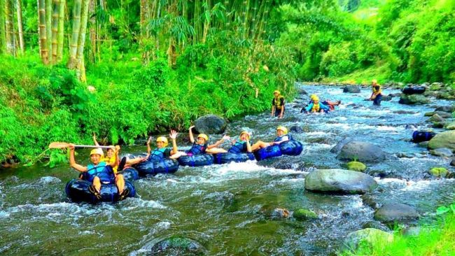
Coban Rondo
Kab.Malang / Jawa Timur
Air terjun legendaris dan spot foto alam.
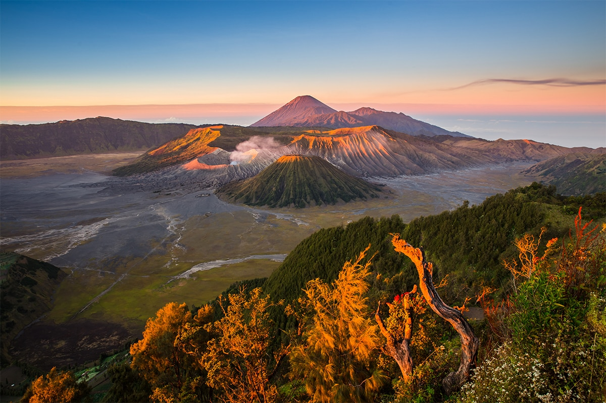
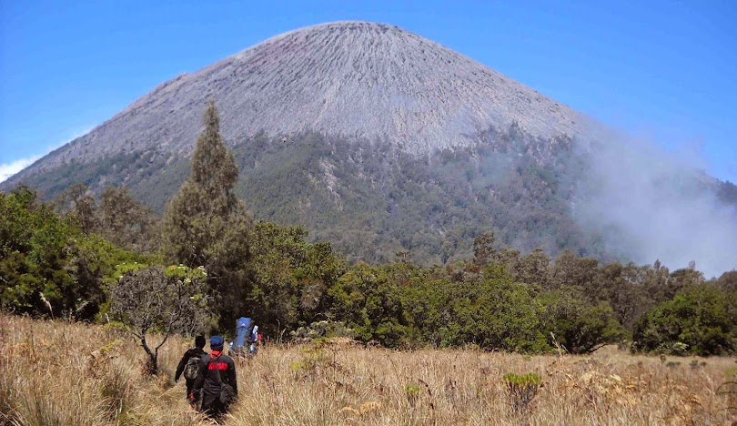
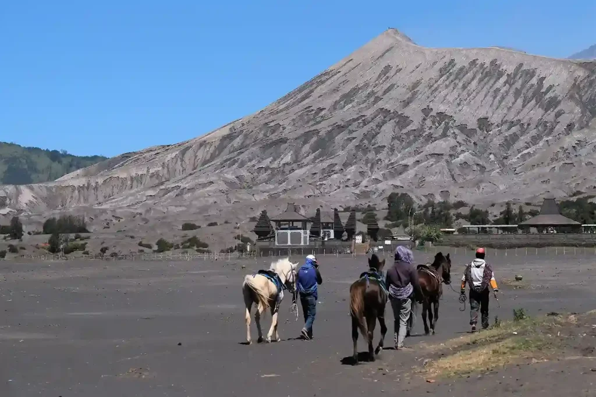
Taman Nasional Bromo Tengger Semeru
Kab.Malang / Jawa Timur
Gunung keren, sunrise kece, vibes petualang yang nagih banget.
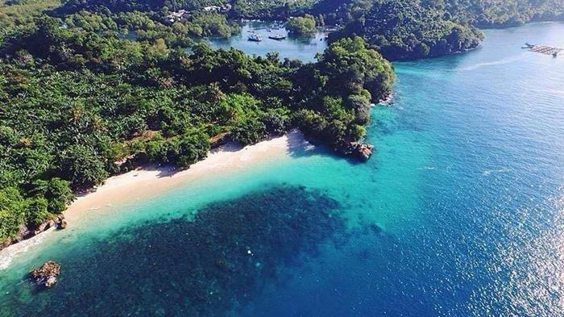
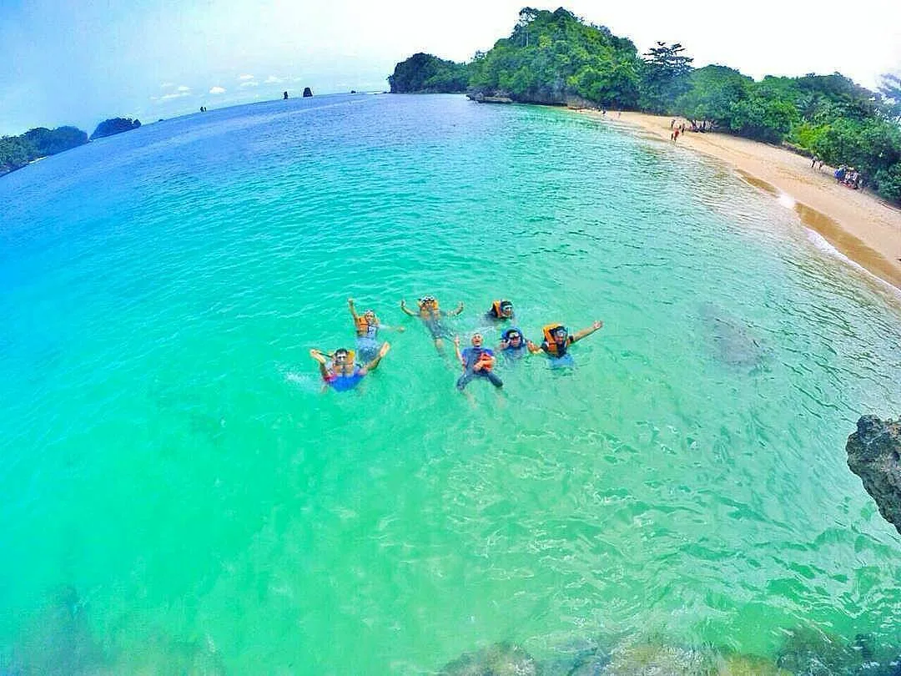

Pantai Tiga Warna
Kab.Malang / Jawa Timur
pantai dengan gradasi air laut 3 warna yang aesthetic.
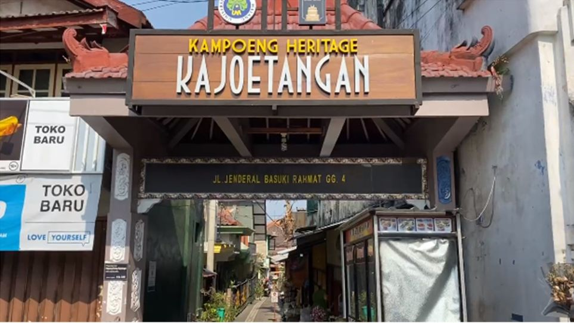
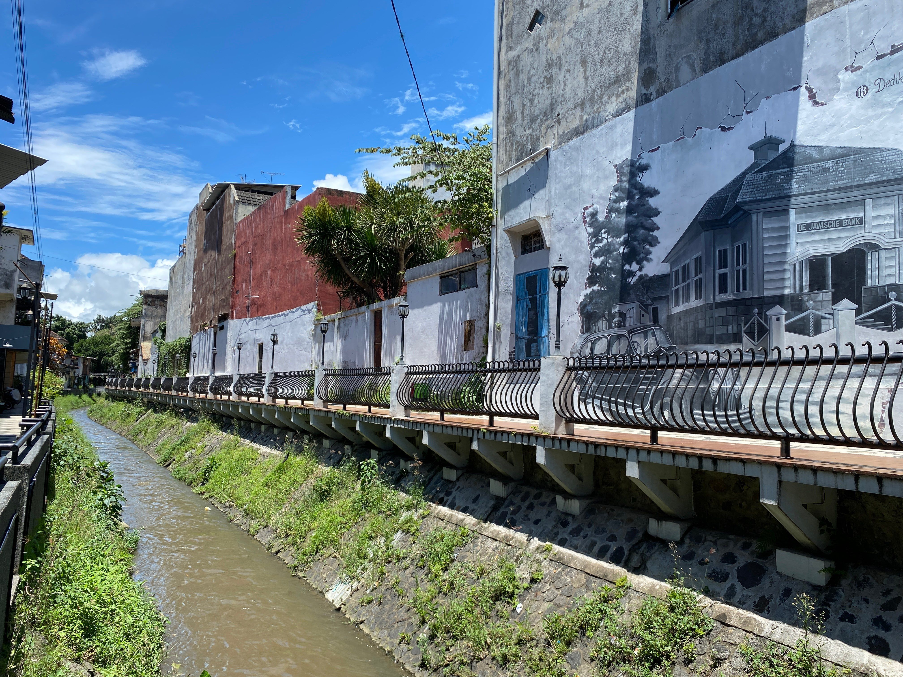
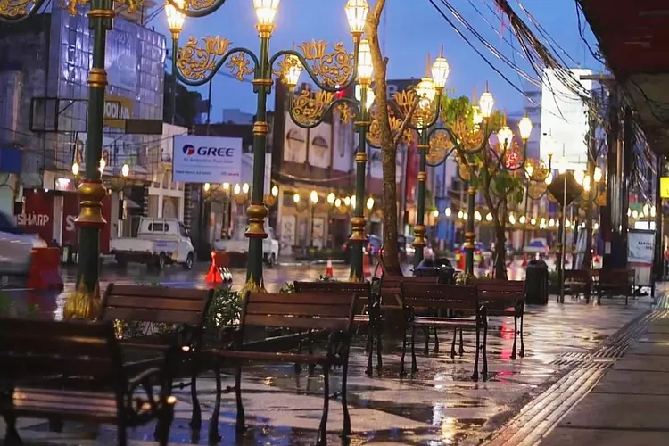
Kampoeng Heritage Kajoetangan
Kota Malang / Jawa Timur
Kampung heritage lawas Malang dengan vibe klasik estetik.